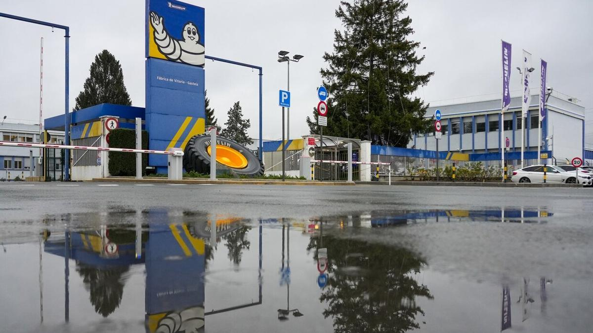

Información de la Sede
Dirección:
Avda. del Cantábrico, 3
01013 VITORIA-GASTEIZ, ÁLAVA
Google Maps
Capacidad de fabricación:
194.600 toneladas/año
Empleados:
3.501 empleados
Más información:
Michelin Vitoria es un centro clave para la fabricación
de neumáticos, especializado en ingeniería civil,
con una producción de alta calidad para clientes globales.